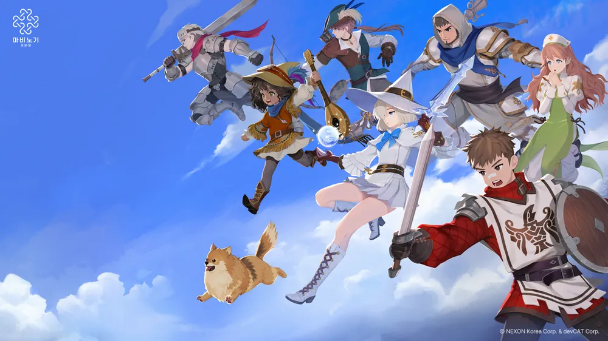

- 전격술사
- 암흑술사
- 힐러
모비노기 직업

마비노기 모바일의 클래스를 정리한 문서.
파이널 판타지 XIV처럼 사용무기를 변경하면 자동으로 클래스가 변경된다. 첫 전직 퀘스트는 캐릭터 레벨이 25이상일 때 스튜어트로부터 퀘스트를 받을 수 있으며, 이후 아란웬을 통해 2차 직업을 고르게 된다
추가 직업을 선택하고 싶을 때에는 전직하고자 하는 클래스의 무기를 손에 장착하고 캐릭터 창의 클래스 메뉴에서 정령의 흔적을 사용하여 클래스를 레벨업 시키면 된다.
클래스 레벨이 25, 35, 45, 55, 65가 될 때마다 까마귀가 클래스 메달을 한 개씩 던져주는데, 이를 5개 모아 던바튼의 아란웬에게 가져다 주면 원하는 클래스의 엠블럼으로 교환 가능하다.
이 메달은 공유보관함을 통해 이동이 가능하므로 부캐로 빠르게 획득하여 본캐에게 몰아주는 것도 가능하다.
또한 타이틀은 계정 공유이므로 부캐로 키운 다른 클래스의 타이틀을 장착하는 것도 가능하며, 3종류의 기본직 전직을 수행하면 베이스 스탯이 15 상승하는 보유 타이틀을 습득하니 키울 생각이 없더라도 부캐 둘은 만들어두는 것이 좋다.
처음으로 한 직업의 클래스 레벨 65를 달성하면 아란웬으로부터 추가 전직 퀘스트(전직:또다른 엠블럼)가 날아오며, 엠블럼을 직접 살 때와 마찬가지로 클래스 메달 5개를 소모하여 선택한 직업 엠블럼에 추가로
쓸모없는 일반 무기 하나를 준다.
이후 대련까지 하고나면[2] 골드를 받고 레벨을 올려주는 "특훈" 기능이 추가되는데, 20만 골드라는 결코 적지 않은 가격에 꼴랑 정령의 흔적 50개(레벨 1 기준 레벨 20까지 오를 정도)만 준다.
이 정도면 던전 몇번 돌고 나온 장비를 갈기만 해도 충분히 얻는 양인지라 굳이 골드를 주고 특훈을 받을 이유가 없다.